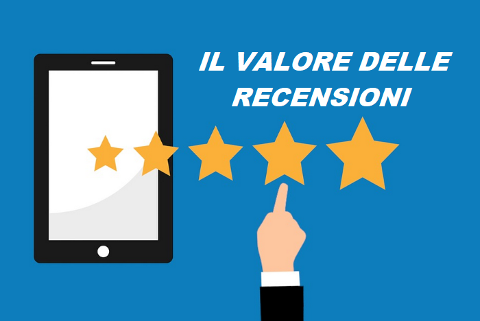

#APPROFONDIMENTI👥
⬆️📌 LE RECENSIONI ONLINE HANNO CAMBIATO IL MARKETING.
✅ Le recensioni online sono oggi cruciali per ogni business ed attività locale che vuole controllare la propria reputazione e aumentare le vendite.
✅ Le recensioni online hanno cambiato la faccia del marketing perché sono oggi uno strumento primario che i consumatori utilizzano per acquisire informazioni e per offrire le proprie considerazioni sul prodotto o sul servizio ricevuto.
✅ Secondo una ricerca, il 91% delle persone legge le recensioni per determinare se un business è buono o cattivo.
✅ Le recensioni sono quindi diventate il punto di congiunzione tra il passaparola tra amici e il marketing virale ed hanno la capacità di muovere montagne di denaro tra un’attività ed un’altra (sempre a favore di chi ha giudizi positivi).
✅ L’importanza per i business è davvero incredibile, a partire dal miglioramento della consapevolezza del marchio fino all’aumento di vendite e profitti nel medio-lungo periodo.
✅ Ecco 8 motivi che rendono fondamentali le recensioni per il tuo business e per la tua reputazione online:
- AUMENTANO LE VENDITE. La ragione principale per cui le recensioni online sono così importanti è che esse influenzano decisamente le vendite perché offrono ai consumatori le informazioni che necessitano prima di prendere la decisione di acquistare il prodotto o il servizio da quel business.
- SI OTTENGONO I FEEDBACK DAI CLIENTI. Grazie alle recensioni potrai comprendere se stai offrendo un buon prodotto/servizio e i punti deboli sui quali lavorare.
- MIGLIORA IL RANKING ONLINE. Le recensioni non si limitano ad creare una relazione migliore tra il cliente e l’attività, ma aiutano anche a migliorare il posizionamento del sito web su Google o della scheda cliente sui portali online. Più positive sono le considerazioni dei tuoi clienti sulla tua attività e più il motore di ricerca considererà importante la tua azienda.
- SI CONSOLIDA IL RAPPORTO CON I CLIENTI. I consumatori che spendono del tempo per scrivere una recensione online lo fanno perché vengono colpiti dal tuo lavoro e se il loro giudizio è positivo, certamente stai facendo un buon lavoro per fidelizzarli. Inoltre, offrire la possibilità ai consumatori di dire la propria, migliora certamente i rapporti con il tuo business e questo aiuta a migliorare i loro giudizi.
- SI CREA UNA COMUNITA' DI CONSUMATORI. Molto spesso le recensioni online vengono effettuate su portali specifici (TripAdvisor, Booking, Facebook, ecc.) dove le pagine di review diventano comunità di commenti attive. È qui anche possibile vedere i commenti degli altri utenti, conoscere i punti di forza del proprio prodotto o semplicemente sapere cosa i clienti pensano del servizio offerto. Queste comunità sociali sono molto potenti perché secondo le indagini influenzano sia il business che gli altri consumatori.
- I CONSUMATORI POSSONO FARE MARKETING PER TE. Una cosa molto positiva è che il valore delle recensioni può offrire al tuo business innumerevoli benefici che molte campagne di marketing non riescono a fare. Questo perché le recensioni vengono fatte direttamente dai clienti e non dall’azienda per cui vengono definite più “affidabili” di molte campagne pubblicitarie, sia nel breve che nel lungo periodo.
- GIA' LE HAI ANCHE SE NON LO SAI. Anche se non le volessi attivare, se hai un’attività commerciale aperta al pubblico, molto probabilmente Google, TripAdvisor, Facebook le hanno già attivate per te e le persone hanno già cominciato a scrivere sul tuo business senza che tu (forse) te ne sia accorto. Queste recensioni influenzeranno sempre e comunque, in modo positivo o negativo, il tuo lavoro.
- LE RECENSIONI PORTANO ALTRE RECENSIONI. È come per le ciliegie, dove una tira l’altra, anche le recensioni di un prodotto o di un servizio che ha già ricevuto altri commenti online incoraggia altri visitatori a lasciare il proprio feedback.
📌 Il business dovrebbe quindi organizzarsi per incentivare i propri clienti ad offrire una propria recensione online così da rafforzare la propria posizione.
✅ Di seguito i principali siti di recensioni per l'Italia: la top 8 per posizionare la vostra azienda in “pole position” sul mercato.
- Google My Business - Google My Business è stato creato nel 2014 ed è il servizio per promuovere la propria attività professionale attraverso una serie di servizi Google.
- Yahoo! Local - Questo sito di recensioni per attività locali si presenta simile, nella struttura e funzionamento, a Google Places e possiede una propria mappa dove visualizzare le aziende registrate. Occorre considerare che Yahoo! rappresenta uno dei top player tra i motori di ricerca nel mondo (assieme a Google e Bing) e le liste di Yahoo! Local sono visualizzate in alto pagina, prima dei risultati organici di ricerca e sotto i primi tre annunci sponsorizzati (in pay-per-click).
- Facebook Places - Facebook può essere oggi considerato uno dei maggiori siti di recensioni online, con più di 2.38 miliardo di utenti attivi. Facebook Places è facile da usare e consente di coinvolgere i propri clienti e i potenziali acquirenti. Il sito internet permette l'inserimento di voti, recensioni, mappe, descrizioni, foto e altro.
- Pagine Gialle - Originariamente nate come semplice elenco telefonico prima cartaceo, poi anche online, paginegialle.it si è oggi aggiornato e consente l'inserimento della vostra attività con i relativi contatti, una presentazione, delle immagini e permette di ricevere le recensioni da parte dei consumatori. Il sito internet di Pagine Gialle offre il vantaggio di essere ben posizionato sui motori di ricerca e di possedere una buona notorietà tra gli utenti italiani.
- TripAdvisor - Altamente noto e ben posizionato sui motori di ricerca, TripAdvisor è diventato quasi fondamentale per ogni attività locale come alberghi e ristoranti. Il suo successo commerciale è talmente elevato da aver spinto alla pubblicazione di molte recensioni false.
- Booking.com - Questo sito internet consente ai visitatori di acquistare le camere di alberghi presenti in tutto il mondo e rilasciare la loro opinione. Nel 2013 è risultato quello col il più alto numero di recensioni. Questo dato, tuttavia, potrebbe dipendere dall'elevata quantità di transazioni effettuate sul sito stesso, visto che booking.com consente il rilascio di recensioni solo dopo aver acquistato e aver usufruito del servizio ricettivo (ottima garanzia, in ogni caso, della genuinità delle recensioni).
- Trivago - Si tratta di un aggregatore di prezzi sugli alberghi e di una comunità di turisti/viaggiatori. Trivago.it raccoglie le descrizioni sulle attività da altri portali e consente agli utenti l'acquisto di una stanza al prezzo migliore presente online e di rilasciare le loro recensioni.
- Trustpilot - Una piattaforma di recensioni molto conosciuta in tutto il mondo, gratuita e accessibile a tutti che permette di fare incontrare i consumatori e le aziende per una continua attività di condivisione, collaborazione e miglioramento.
📌 In Conclusione - Le recensioni sono oggi un importantissimo strumento da utilizzare per il proprio business, facendo però attenzione poiché, se sfruttate in maniera sbagliata, possono provocare un effetto contrario. Spetta a noi fare del nostro meglio e sfruttarle al meglio!!
Se lo desideri, iscriviti ai mie canali social per restare aggiornato ⬇️
Social MediaInoltre se hai trovato utile ed interessante questo articolo, non esitare a condividerlo, a lasciare un tuo mi piace 👍, o seguire la mia pagina Facebook, per sostenermi e continuare ad informare. Grazie anticipatamente a chi vorrà farlo.